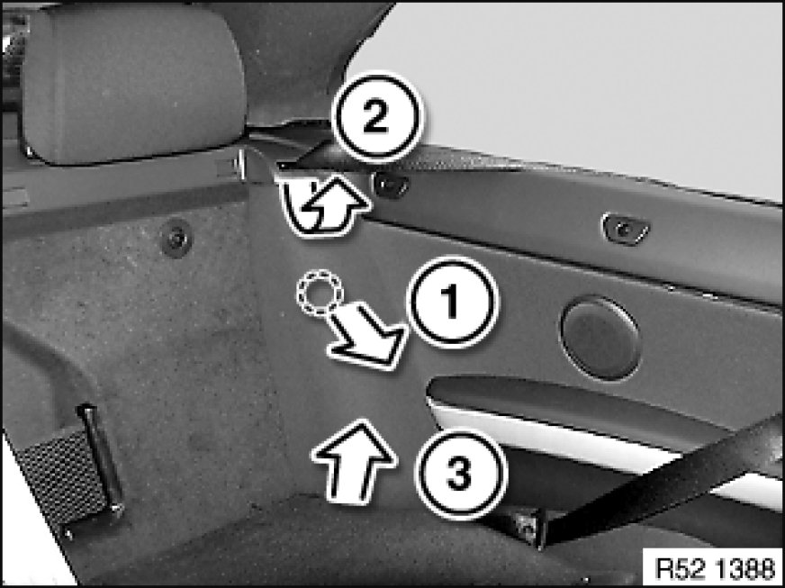
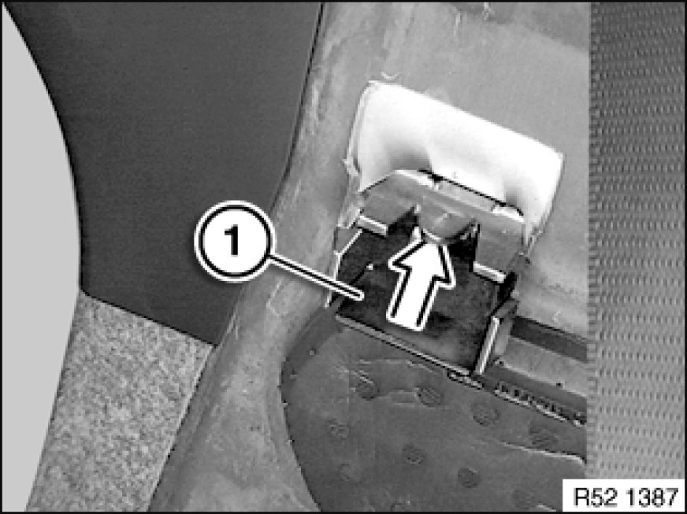
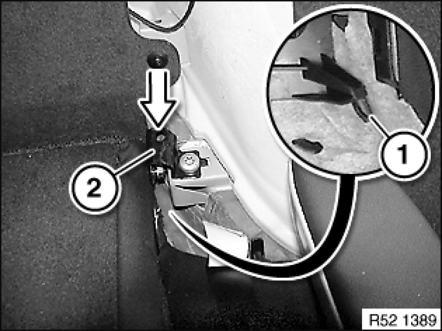

Removing and Installing/Replacing Rest Side Section on Left or Right Rear Seat Backrest
52 26 008 - Removing and installing/replacing rest side section on left or right rear seat backrest

Removing rest side section:
1. Unclip in middle
2. Lever out at top from belt cover
3. Lift out rest side section

Installation:
Unlock clip (1) and pull forwards out of body.
Engage clip (1) in rest side section.
If necessary, replace faulty clip (1).

Installation:
Insert lower rest side section into rear seat.
Insert plastic tab (1) of rest side section in backrest mount (2).
Pin must not be damaged.